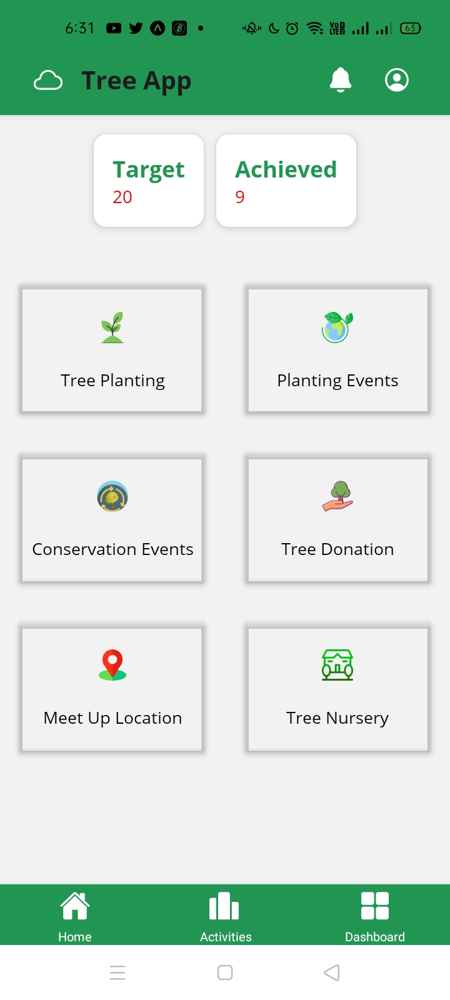
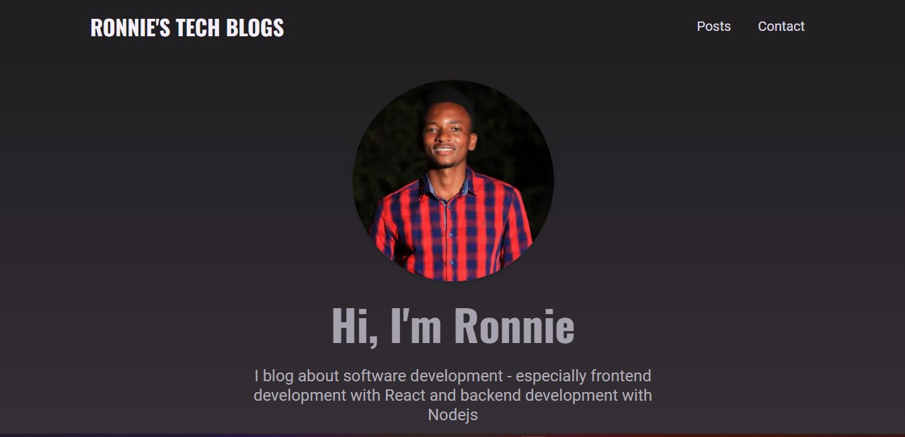
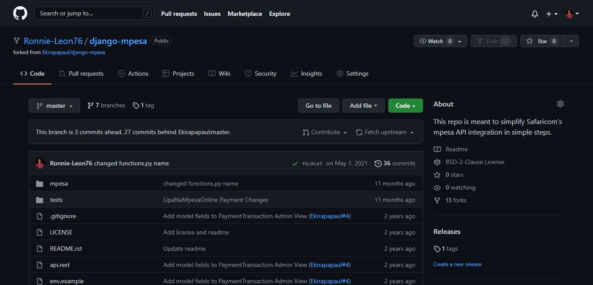
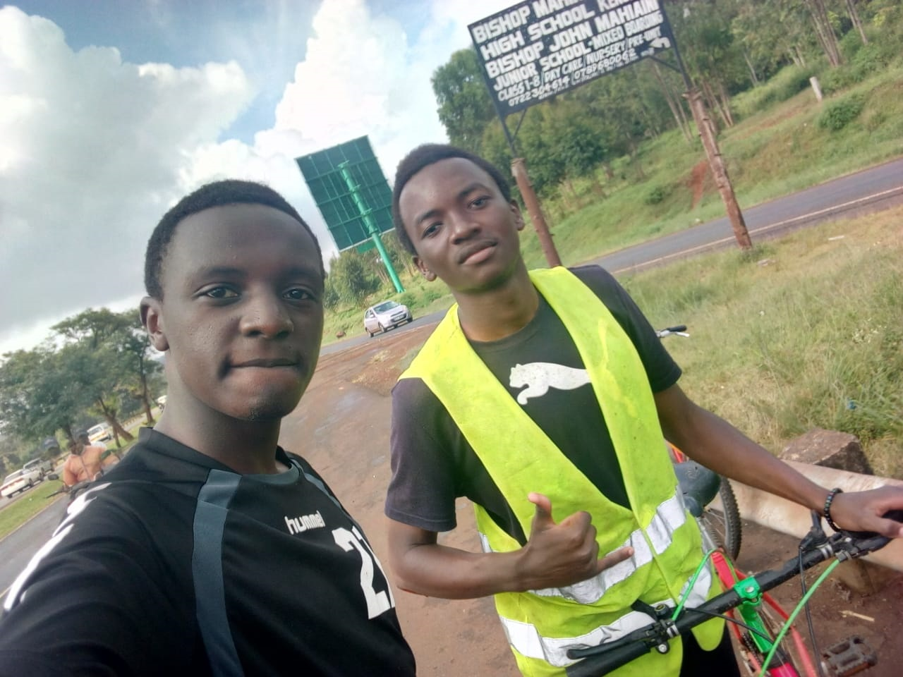
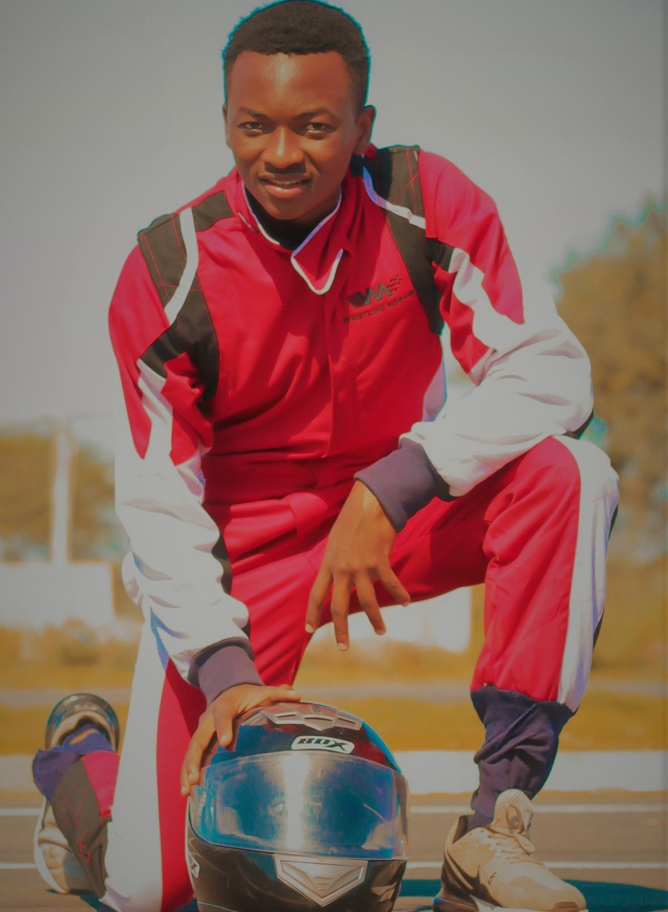

Ronnie Leon
ReactJS || NextJS || Express || NodeJS || React Native || Django
I am web developer with experience in developing and maintaining websites, database management systems, front-end & back-end design, scripting and website administration. I'm passionate about learning new technologies and working in teams to solve problems. Self driven, responsible, reliable and self directed individual.
Currently, I work at Faina Consultancy. I develop both mobile and web applications.
Featured Projects
View selected projects below.
Tree App Built with React Native
I developed a tree app, to be used to keep track of tree planting events and the number of trees planted by the Eco Lavington Rotaractors group. The app also sensitizes people within Kenya about climate change and creates awareness on the ongoing below 2°C. For further info:
Tree App My Blog Application
I blog about software development, especially front-end development with ReactJS and NextJS and back end development with NodeJS and Express. I generally blog about awesome technologies available today.
My Blog Django M-pesa Library
Helped in developing a Python-Django Library to integrate M-pesa payment method easily to Django applications. The Library makes it super easy to integrate M-pesa payment method to Django applications.
Django-M-pesa Library Work Experience
React Developer
Faina Consultancy
November 2021-Present
Develops web and mobile applications at Faina Consultancy
Entrepreneur
Avatar Tech KE
Jan 2021 - Present
Dealt with tech related business spanning from selling computer accessories and hardware parts such as RAMs,SSDs, HDDs
Key contributions:
-
Responsible for developing an E-commerce platform to sell
computer accessories, computer hardware parts and
microcontrollers, sensors and actuators.
- Responsible for doing market research to identify business niches
- Responsible for identifying enterprises trading hardware and computer parts at an affordable price in order to buy and resell.
For further information visit LinkedIn
Agot Pro Junior Developer
Employed
Jan 2021 - Dec 20221
Responsible for revamping the existent website and adding new features to the web application
Key contributions:
- Back end development with Python Django
- Polishing the Agot Pro's User interface
Education
Kenyatta University.
Third Year Biomedical Engineering Student.
Engineer to be!
Grade: Incomplete.
Goethe Institut
I learnt Deutsch language right from the beginners level A1 to A2. I have an elementary understanding of the German language and culture.
Huawei ICT Academy
April 2020
Huawei Routing & Switching Certification awarded to me by Huawei Technologies.
LinkedIn Learning Software Development Course.
August 2020-Septmeber 2020
Learnt several programming languages including Python, Java, JavaScript & C#. I also learnt Front end development with tools such as HTML & CSS and web security measures. I also learnt Database administration and querying with SQLite.
Awarded several certificates on Learning HTML,CSS,JavaScript, Java, Python & C#
Cardinal Otunga High School Mosocho
Kenya Certificate of Secondary Education 2018 Mean Grade: A-
I participated in Science Club and played socccer. I also participated in the annual Chemistry contest and was highly congratulated for remarkable results. I received several certificate having participated in several co-curricular activities.
Unity Primary School.
Kenya Certificate Primary Education 2014 Mean Grade: B+
Hobbies
Cycling
I'm an adventure enthusiast. I have managed to make a couple of rides: Kahawa Sukari-Sagana, Juja-Ol-Donyo Sabuk & Syokimau-Bisli,Kajiado.
Motorsports
I have participated in Motorsports at Whistling Morans, Athi River, Kenya. I indulged in gokarting and speed bike riding. I'm a motorsports enthusiast.
Football Playing
I fancy playing football during my leisure time.
Reading journals and inspirational books and learning emerging technologies
Being an aspiring technocrat I follow up on new and emerging technologies in the technological world. I also read inspirational books for example 7 habits of the highly effective people by Stephen R Covey to get some inspiration and the urge to be better each day the sun rises.
Coding
I'm passionate about writing code to automate task, i enjoy tinkering with embedded devices and creating awesome technologies. I'll also like sharing about amazing technologies